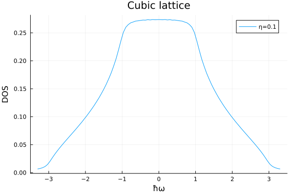
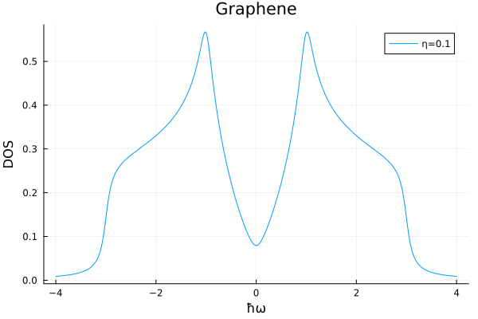

Density of states
The density of states (DOS) is a standard electronic structure calculation. Here we show how to calculate it using a finite scattering rate, i.e. at finite temperature, using AutoBZ.jl by working through a few examples. After walking through these tutorials, continue with the demos/dos_test.jl script that compares several algorithms for the calculation of the DOS of a Wannier90 Hamiltonian using the load_wannier90_data interface.
DOS of the integer lattice tight-binding model
In this tutorial, we consider a tight-binding model on the $n$-dimensional integer lattice with lattice constant $a$ and hopping strength $t>0$ given by the following Hamiltonian:
\[H = -t \sum_{i \in Z^n} \sum_{j=1}^n \ket{i}\bra{i+\hat{j}} + \ket{i+\hat{j}}\bra{i}\]
where $\ket{i}$ represents the state at lattice site $i\in Z^n$ and $\hat{j}$ represents a vector of zeros except for a one at position $j$. We will compute the density of states (DOS) of this system, which as a function of $n$ shows the dimension-dependent behavior of Van-Hove singularities.
Employing Bloch's theorem, which for this problem implies $\ket{i+\hat{j}} = e^{i\bm{k}\cdot\hat{j}}\ket{i}$, yields the following band structure
\[H(k_1, \ldots, k_n) = -t(\cos(k_1 a) + \cdots + \cos(k_n a))\]
We shall input this Hamiltonian to AutoBZ by constructing an equivalent Fourier series, which boils down to writing this Hamiltonian in the form $H(\bm{k}) = \sum_{\bm{R}} e^{i\bm{k}\cdot\bm{R}} H_{\bm{R}}$, where $\bm{R}$ is an integer multi-index. To do this, we follow the Hamiltonian recipe. In the first step, we identify the real and reciprocal lattice basis vectors as the Cartesian coordinate basis and then observe that the $\bm{R}$ vectors with non-zero coefficients are exactly the nearest neighbor vectors $\{\pm\hat{j}\}_{j=1}^{n}$. In step two, we identify the coefficients to be $-t/2$ for all the terms by simply writing the cosines as complex exponentials. Finally we fill the array of coefficients by taking each $\bm{R}$ to be the array index of the corresponding coefficient $H_{\bm{R}}$.
using OffsetArrays
using AutoBZ
n = 3 # arbitrary positive integer representing the number of k-space dimensions
a = 1.0 # lattice spacing
t = 1.0 # hopping amplitude
#=
construct the array of scalar coefficients and use an OffsetArray so that the
array indices correspond to the R integer multi-index of the Fourier series
=#
C = OffsetArray(zeros(ntuple(_ -> 3, n)), ntuple(_ -> -1:1, n)...)
for i in 1:n, j in (-1, 1)
C[CartesianIndex(ntuple(k -> k == i ? j : 0, n))] = -0.5t
end
H = FourierSeries(C, period = 2pi/a)3×3×3 and (6.283185307179586, 6.283185307179586, 6.283185307179586)-periodic FourierSeries with Float64 coefficients, (0, 0, 0) derivative, (0, 0, 0) offsetThen we can define the integration problem to compute DOS, defined by the integral
\[\operatorname{DOS}(\omega) = -\frac{1}{\pi} \int_{\text{BZ}} d\bm{k}\ \operatorname{Im}\ \left[ (\hbar\omega+\mu-H(\bm{k})+i\eta)^{-1} \right]\]
where $\omega$ is a frequency variable, $\bm{k}$ is the reciprocal space vector, $\mu$ is the chemical potential and $\eta$ is a constant scattering rate. We assemble this problem using the built-in DOSSolver
using LinearAlgebra
ω = t*n # frequency at the band edge/Van-Hove singularity
ħ = 1.0 # reduced Planck's constant
η = 0.1 # broadening
Σ = EtaSelfEnergy(η)
bz = load_bz(FBZ(3), Diagonal(collect(AutoBZ.period(H))))
solver = DOSSolver(Σ, HamiltonianInterp(AutoBZ.Freq2RadSeries(H)), bz, PTR(npt=50); ω);To compute the integral, we defined a Brillouin zone as a domain of integration using AutoBZCore.load_bz with the integrand and domain, and chose and algorithm, in this case AutoBZCore.PTR. (Other automatic algorithms, such as AutoBZCore.AutoPTR and AutoBZCore.IAI also allow passing keywords abstol and reltol to the solver, which should provide convergence to the requested tolerance.) We can now calculate and plot the DOS as a function of frequency
using Plots
freqs = range(-ω, ω, length=100) * 1.1
plot(freqs, ω -> (AutoBZ.update_dos!(solver; ω); solve!(solver).value), title="Cubic lattice", xguide="ħω", yguide="DOS", label="η=$η")
Here we used a built-in helper function, AutoBZ.update_dos!, to update the parameters of the solver, and CommonSolve.solve! to perform the calculation. Each observable defined in AutoBZ.jl comes with an associated solver and parameter updating function intended to be used this way.
DOS interpolation for Graphene
In this tutorial, we will build the Fourier series corresponding to a tight-binding model of graphene. This example is more complex in that the lattice vectors are not orthogonal and that there are multiple bands.
The tight-binding model on the hexagonal lattice with lattice constant $a$ and hopping amplitude $t$. Applying Bloch's theorem to each triangular sublattice brings the Hamiltonian into block-diagonal form, where each block is of the form
\[-t \begin{pmatrix} 0 & f(\bm{k}) \\ f^*(\bm{k}) & 0 \end{pmatrix}\]
where $f(k) = \sum_{j=1}^{3} e^{i\bm{k}\cdot\bm{\delta}_j}$ depends on the nearest-neighbor vectors
\[\bm{\delta}_1 = a\hat{x} \qquad \bm{\delta}_2 = a(-1/2\hat{x}+\sqrt{3}/2\hat{y}) \qquad \bm{\delta}_3 = a(-1/2\hat{x}-\sqrt{3}/2\hat{y})\]
To exactly construct this Fourier series, we begin with step one of the Hamiltonian recipe identifying a basis of lattice vectors that forms a Bravais lattice. We can choose these as the following triangular lattice vectors
\[\bm{a}_1 = (\bm{\delta}_1 - \bm{\delta}_3)/3 \qquad \bm{a}_2 = (\bm{\delta}_1 - \bm{\delta}_2)/3\]
such that in this basis we write
\[\bm{\delta}_1 = \bm{a}_1 + \bm{a}_2 \qquad \bm{\delta}_2 = \bm{a}_1 - 2\bm{a}_2 \qquad \bm{\delta}_3 = -2\bm{a}_1 + \bm{a}_2\]
Now taking step two, we factor the Hamiltonian into different normal modes and observe the $\bm{R}$ vectors are just the pairs of integer coefficients in the linear combination of Bravais lattice vectors for each exponential.
\[(e^{i\bm{k}\cdot(\bm{a}_1 + \bm{a}_2)} + e^{i\bm{k}\cdot(\bm{a}_1 - 2\bm{a}_2)} + e^{i\bm{k}\cdot(-2\bm{a}_1 + \bm{a}_2)}) \begin{pmatrix} 0 & 0 \\ -t & 0 \end{pmatrix} + (e^{i\bm{k}\cdot(-\bm{a}_1 - \bm{a}_2)} + e^{i\bm{k}\cdot(-\bm{a}_1 + 2\bm{a}_2)} + e^{i\bm{k}\cdot(2\bm{a}_1 - \bm{a}_2)}) \begin{pmatrix} 0 & -t \\ 0 & 0 \end{pmatrix}\]
This corresponds to the following Fourier series in AutoBZ
using StaticArrays
using OffsetArrays
using AutoBZ
a = 1.0 # length of Bravais lattice vectors
t = 1.0 # hopping amplitude
C = OffsetArray(zeros(SMatrix{2,2,ComplexF64,4}, (5,5)), -2:2, -2:2)
C[1,1] = C[1,-2] = C[-2,1] = [0 -t; 0 0] # Define C[R] = H_R
C[-1,-1] = C[-1,2] = C[2,-1] = [0 0; -t 0]
H = FourierSeries(C, period = 2*pi/a)5×5 and (6.283185307179586, 6.283185307179586)-periodic FourierSeries with StaticArraysCore.SMatrix{2, 2, ComplexF64, 4} coefficients, (0, 0) derivative, (0, 0) offsetThe DOS integrand can be formulated as before using a DOSSolver.
using LinearAlgebra
ω = 4.0 # eV
η = 0.1 # eV
Σ = EtaSelfEnergy(η)
bz = load_bz(FBZ(2), Diagonal(collect(AutoBZ.period(H))))
solver = DOSSolver(Σ, HamiltonianInterp(AutoBZ.Freq2RadSeries(H)), bz, PTR(npt=100); ω);Using this integral solver, we can compute a fast-to-evaluate, adaptive interpolant for the DOS using HChebInterp.jl.
using HChebInterp
using Plots
DOS = hchebinterp(ω -> (AutoBZ.update_dos!(solver; ω); solve!(solver).value), -ω, ω; atol=1e-3)
plot(range(-ω, ω, length=1000), DOS, title="Graphene", xguide="ħω", yguide="DOS", label="η=$η")
The advantage of interpolating the DOS is that the adaptive algorithm will automatically select frequencies to resolve narrow features to within the requested tolerance.